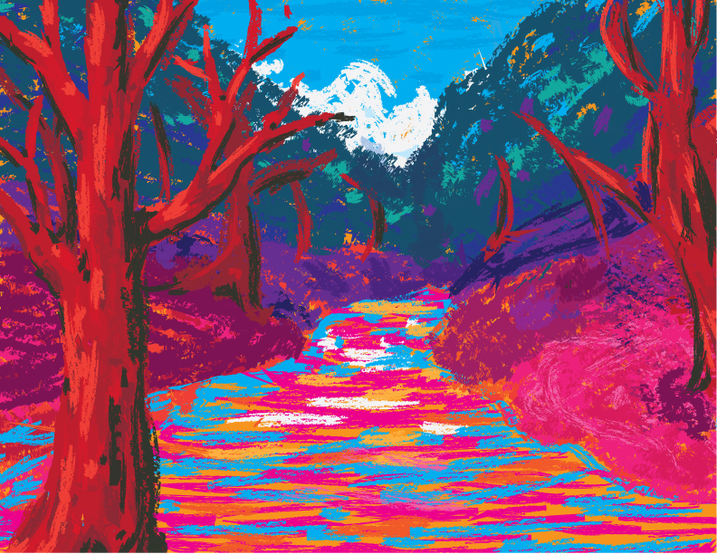

I wanted to choose a fauvist landscape because of the way fauvism plays with color, shape and texture. It’s kind of like impressionism, and gives way to various interpretations. I took some liberty with how I replicated this landscape, but I feel like the concept is still there.
